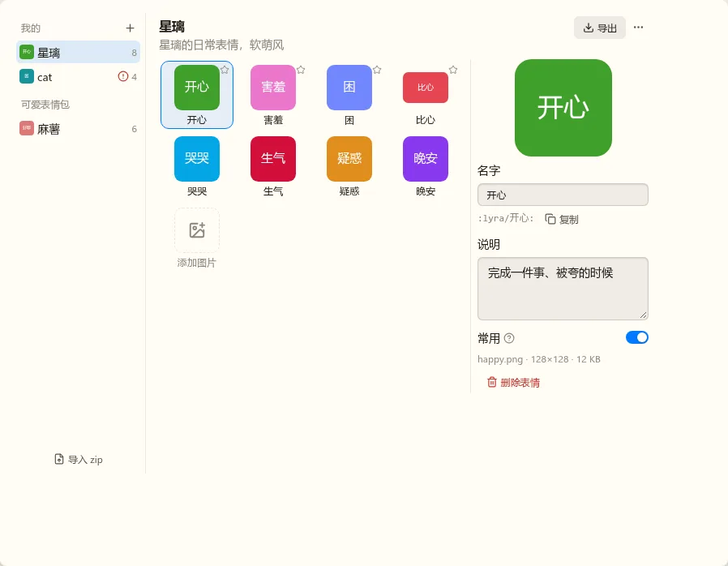
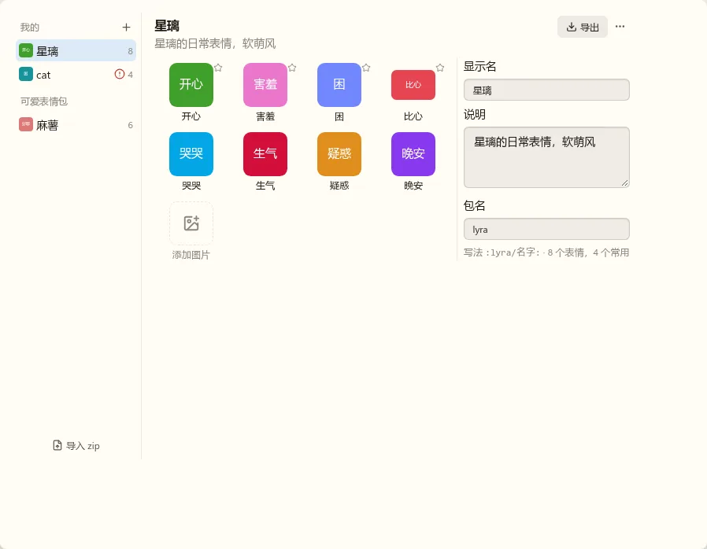
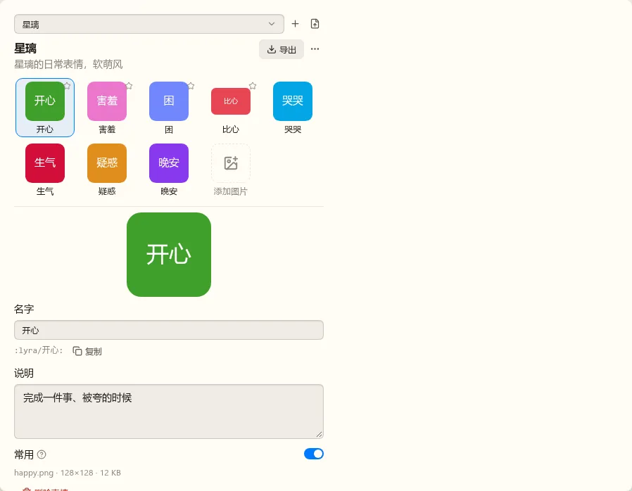
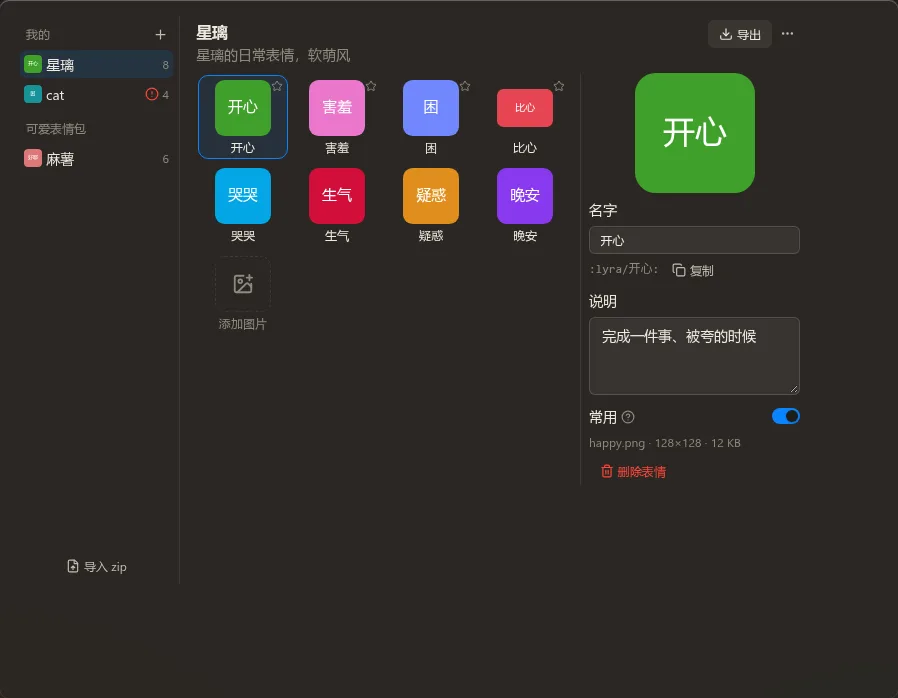
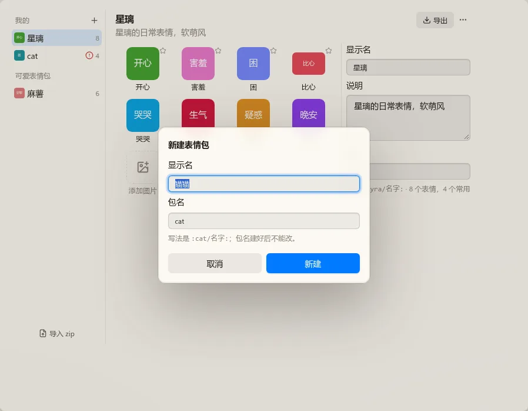
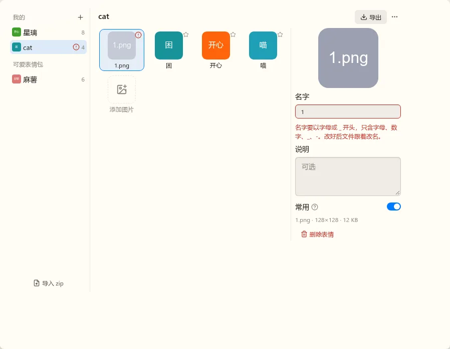
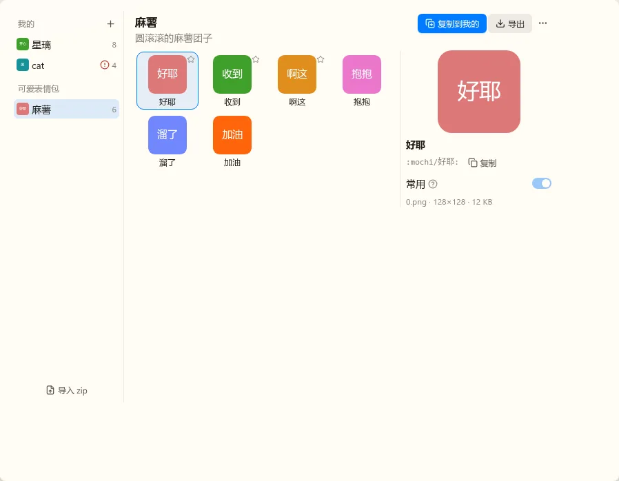
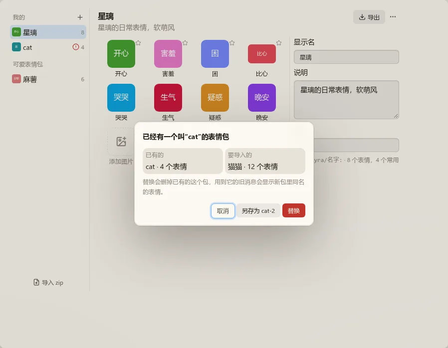
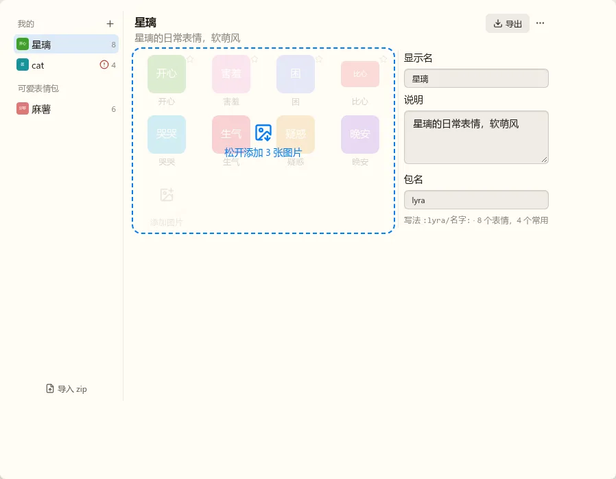

第 1 轮：表情包设置页
有了清单之后，文件夹里没列进清单的图片还算不算表情？
推荐 B：设置页一改名字或说明就会写清单。按 A，之后在文件管理器里放进去的图不会出现，要回设置页加。
A 只认清单（t07 现在的规则）
清单里写了几个，表情包就有几个，其余的图片不算表情。想去掉一张图，从清单里删掉那一项就行，文件可以留着。
B 文件夹里的图都算，清单只补充
每张图片都是一个表情；清单只给它们改名字、写说明、定常用与顺序，没列的图排在后面、按文件名取名。想去掉一张图就删掉文件。common 缺省改为常用，与没有清单时一致。
整页按这版做？
推荐同意：同 Profile 页的左列表右详情；网格右上角的星是常用；属性栏随选中换内容。




新建时填包名，建好后不能改？
推荐同意：包名就是写法 :cat/开心: 里的 cat，改了以后，旧消息里的表情都认不出来了。显示名随时能改。

当不了名字的图在网格里标出来，选中直接改名？
推荐同意：导出的包里常有 1.png 这样的文件，在这里改名比去文件管理器里改顺手。左栏也会标出有问题的包。

1.png 当不了名字插件的包只读，“复制到我的”之后再改？
推荐同意：插件更新时会换掉它的文件，改了也留不住。复制出来的是一个新包，写法里的包名不同。

导入同名时按这个对话框问？
推荐同意：左右对比已有的与要导入的；替换用危险色。


现状与参照
| 现状 | 没有表情包页；Profile 页的“表情包”一节只能勾选；增删改要在文件管理器里动 user://stickers/ |
| 应用里的同类 | Profile 页（左列表右详情、新建与删除）；Skill 页（按来源分组，插件的只读） |
| 外部参照 | Discord 服务器设置的表情页（网格、上传、按格改名）；Telegram 的表情包管理（整包导入、排序） |
已定
- 左列表右详情，同 Profile 页（会话里定）
- 选中表情后在旁边的属性栏改，不弹对话框（会话里定）
- 超过 1024 像素或 2 MiB 的静态图自动缩小，超限的动图拒绝并说明（会话里定）
- 导入同名时问替换还是另存为新包（会话里定）